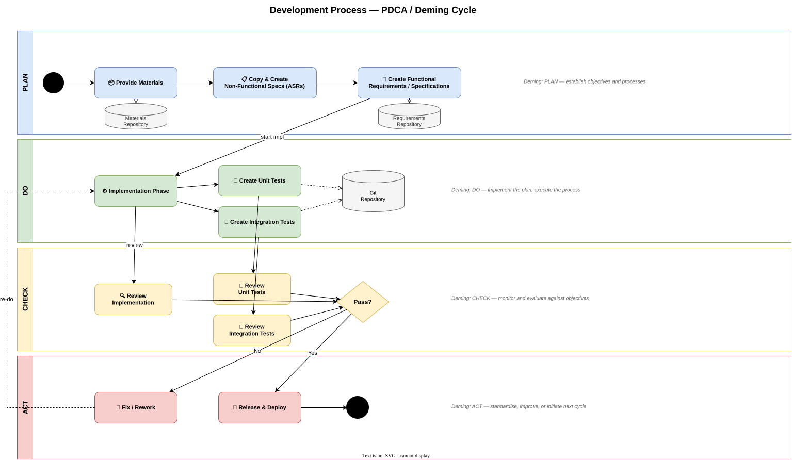

Development Process - Governance and Gates
Decision Model
Governance turns the PDCA flow into explicit decisions. A gate is not a document ceremony; it is a point where accountable people inspect current evidence and decide to proceed, rework, re-plan, or stop.

Quality Gates
| Gate | Minimum evidence | Possible decision |
|---|---|---|
| Ready for implementation | Bounded scope, requirements, acceptance criteria, identified dependencies | Start, clarify, or defer |
| Ready for review | Implementation, relevant tests, validation results, updated documentation | Review or return incomplete work |
| Review verdict | Peer review, automated review report, requirement and risk evidence | Approve, approve with changes, or deny |
| Ready for release | Accepted review, passing pipeline, deployment and rollback plan | Schedule, hold, or reject |
| Release verified | Deployment result, health checks, monitoring signals, known-issue record | Complete, remediate, or roll back |
Traceability
Traceability should make it possible to move in both directions: from a requirement to its implementation and evidence, and from a changed line or component back to the reason it exists.
Practical identifiers
- Use stable requirement identifiers in tasks, test names, or review descriptions.
- Reference architecture decisions when a change depends on a significant trade-off.
- Keep generated review reports with the build or change they assess.
- Associate releases and operational incidents with the exact deployed version.
Review Tool in the Check Phase
The repository's review agents provide repeatable evidence for Java, TypeScript, Rust, React, C++, and C# changes. They supplement peer review by checking language-specific patterns and comparing source with configured requirements.
Generated reports are stored under review/results/<timestamp>/. A report is evidence for the current source state only; regenerate it after changes made in response to findings.
Roles and Accountability
| Role | Primary accountability |
|---|---|
| Requirement owner | Clarifies intent, priority, acceptance criteria, and scope changes. |
| Implementer | Produces the change, tests, documentation, and local validation evidence. |
| Reviewer | Challenges correctness, risk, maintainability, and requirement coverage independently. |
| Release owner | Confirms release readiness, deployment controls, rollback capability, and approvals. |
| Service owner | Observes production outcomes and prioritizes operational improvements. |